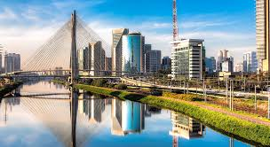
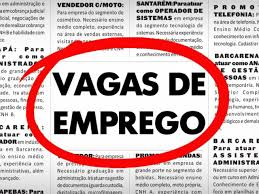

O Campo

O campo é uma área rural onde se desenvolvem atividades agrícolas e pecuárias. As paisagens são amplas e a vida segue um ritmo mais tranquilo, com contato direto com a natureza. A agricultura sustentável e a criação de gado são exemplos de atividades predominantes.
A Cidade
A cidade é um ambiente urbano onde há uma maior concentração de pessoas, prédios e infraestruturas. A vida urbana é marcada pela rapidez e pela diversidade de serviços e oportunidades. Exemplos incluem o comércio, indústrias e uma variedade de serviços públicos e privados.
Oportunidades
O projeto Agrinho busca conectar o campo e a cidade, colhendo oportunidades para ambos os ambientes. A inovação tecnológica, a educação e o empreendedorismo são ferramentas-chave para criar novas oportunidades e melhorar a qualidade de vida tanto no campo quanto na cidade.